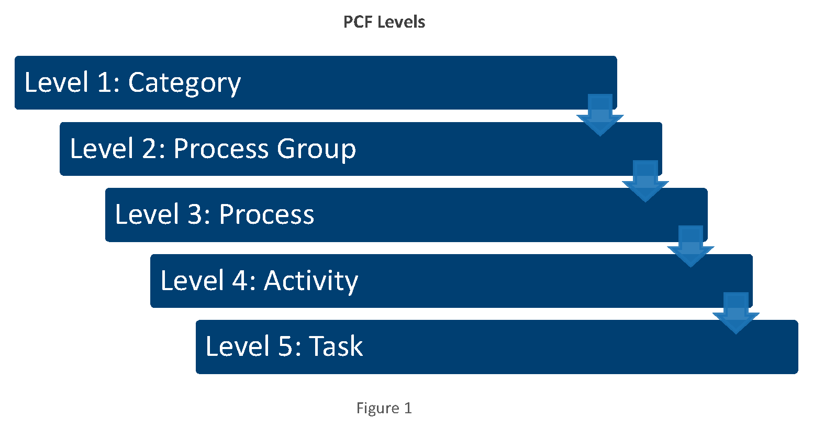
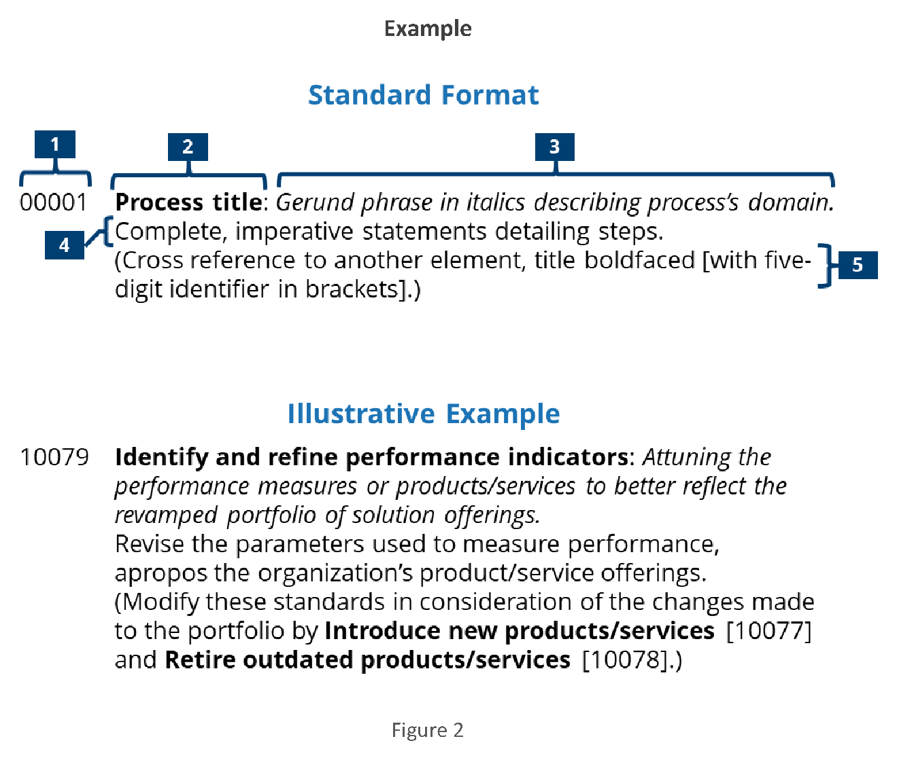
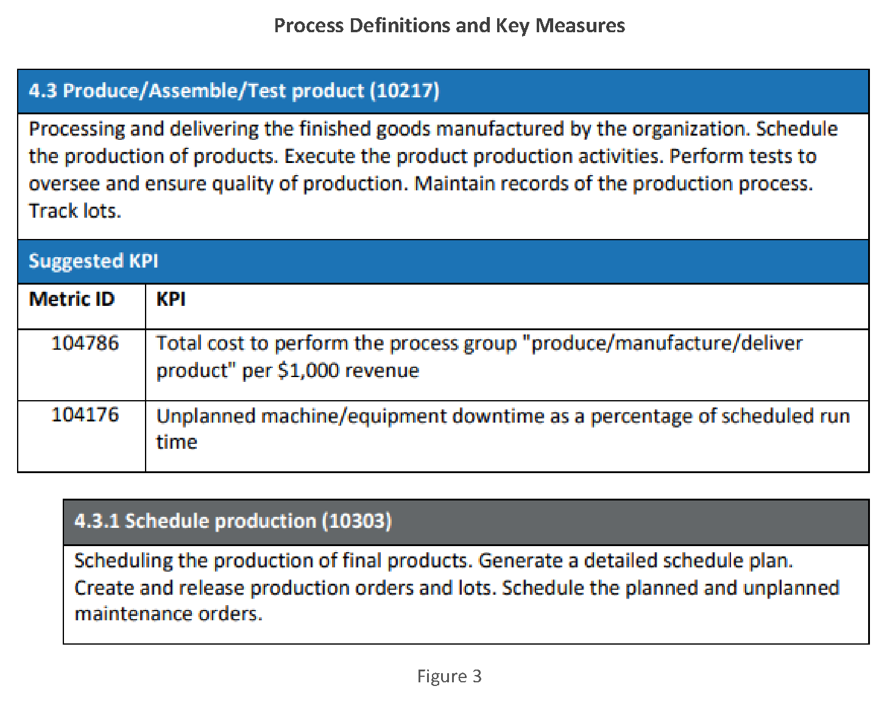

Indice del modulo
- 1 Il Process Classification Framework di APQC
- 1.1 Origine e scopo
- 1.2 La versione Cross-Industry 8.0
- 2 I livelli della gerarchia
- 2.1 Category (livello 1)
- 2.2 Process Group (livello 2)
- 2.3 Process (livello 3)
- 3 Identificare le Category in azienda
- 3.1 Processi di gestione e supporto nel PCF
- 3.2 Esempi per dominio
- 4 Laboratorio
1 Il Process Classification Framework di APQC
Il Process Classification Framework (PCF) di APQC è una tassonomia di processi aziendali organizzata in livelli gerarchici. Nasce per il benchmarking e viene usato come riferimento per mappare, confrontare e migliorare i processi.
La versione Cross-Industry è indipendente dal settore e raccoglie i processi comuni alla maggior parte delle organizzazioni.
1.1 Origine e scopo
APQC sviluppa strumenti e conoscenze per il benchmarking, la gestione dei processi e il miglioramento delle prestazioni. Il Process Classification Framework, sviluppato a partire dal 1992, offre un linguaggio comune per discutere, organizzare e confrontare il lavoro svolto dalle organizzazioni.
Il PCF è un elenco gerarchico di processi aziendali, non la sequenza con cui il lavoro deve essere eseguito. La versione cross-industry organizza il lavoro in tredici Category di alto livello, progressivamente articolate in Process Group, Process, Activity e Task. Ogni elemento possiede un identificativo stabile che permette di mantenere il riferimento anche quando nomi e formulazioni vengono adattati.
Un vocabolario condiviso riduce le ambiguità tra funzioni, sedi e organizzazioni. Lo stesso processo può infatti essere chiamato in modi diversi oppure essere distribuito tra reparti differenti: il PCF consente di descriverlo a partire dal risultato prodotto, senza dipendere dall'organigramma locale.
Le applicazioni principali sono il benchmarking, perché definizioni comuni rendono confrontabili misure e prestazioni; la gestione dei processi, perché il framework aiuta a costruire l'inventario dei processi e a definirne i confini; e la gestione dei contenuti, perché procedure, indicatori, rischi e documenti possono essere classificati secondo una struttura coerente.
1.2 La versione Cross-Industry 8.0
La versione Cross-Industry è il modello più generale: può essere applicata a organizzazioni di qualsiasi settore e copre sia i processi operativi sia quelli di gestione e supporto. Le versioni industry-specific conservano la struttura di base e gli identificativi di riferimento, ma approfondiscono i processi caratteristici di uno specifico comparto.
La struttura comune permette di confrontarsi anche con organizzazioni di settori diversi; il dettaglio settoriale consente invece confronti più precisi con i propri pari. Il framework resta un punto di partenza da adattare: alcune voci possono non essere applicabili, mentre altre possono richiedere un'estensione locale mantenendo la tracciabilità verso il PCF.
APQC distribuisce il PCF in formato PDF ed Excel. Il PDF rende immediatamente leggibile la gerarchia ed è utile per presentare il framework e costruire consenso; il foglio Excel contiene definizioni in linea più complete ed è più adatto all'indicizzazione, all'integrazione e alla costruzione di modelli aziendali.
- Versione PDF - apre la scheda APQC con il comando View Now.
- Versione Excel - apre la scheda APQC con il comando View Now.
2 I livelli della gerarchia
Il PCF scompone il lavoro in cinque livelli: Category, Process Group, Process, Activity e Task. Ogni passaggio restringe il campo: dalla grande area di lavoro si arriva agli eventi chiave e alle azioni operative.
I primi tre livelli costituiscono l'ossatura con cui classificare i processi dell'organizzazione. Activity e Task aggiungono il dettaglio esecutivo e saranno approfonditi nel modulo successivo.
La gerarchia non implica che tutti gli elementi abbiano lo stesso peso. Il PCF non è uniformemente livellato: task collocati in rami diversi possono richiedere quantità di lavoro differenti e, quando serve, possono essere ulteriormente scomposti in sotto-task.


Il diagramma seguente applica i primi tre livelli a un ramo reale. La Category 6.0 Manage Customer Service si divide in Process Group; ciascun Process Group contiene a sua volta i Process che ne specificano il perimetro.

2.1 Category (livello 1)
La Category è il livello più alto del PCF e identifica una grande area di lavoro. Le tredici Category offrono una vista complessiva dell'organizzazione e non coincidono necessariamente con i reparti.
| Category | Nome | Spiegazione |
|---|---|---|
1.0 | Develop Vision and Strategy | Definisce il concetto d'impresa, la visione di lungo periodo, la strategia e le iniziative necessarie per attuarla. |
2.0 | Develop and Manage Products and Services | Governa il portafoglio e lo sviluppo di prodotti e servizi, dall'idea fino alla preparazione del rilascio. |
3.0 | Market and Sell Products and Services | Comprende l'analisi di mercati e clienti, il marketing, la strategia commerciale e la gestione delle vendite. |
4.0 | Manage Supply Chain for Physical Products | Pianifica e gestisce approvvigionamento, produzione, logistica e magazzino dei prodotti fisici. |
5.0 | Deliver Services | Definisce la governance, prepara le risorse e gestisce l'erogazione dei servizi ai clienti. |
6.0 | Manage Customer Service | Governa assistenza post-vendita, richieste, reclami, richiami di prodotto e soddisfazione del cliente. |
7.0 | Develop and Manage Human Resources | Pianifica e gestisce l'intero ciclo di vita delle persone, dalla selezione fino alla mobilità e all'uscita. |
8.0 | Manage Information Technology (IT) | Allinea l'IT al business e gestisce informazioni, rischi, soluzioni, distribuzione e supporto tecnologico. |
9.0 | Manage Financial Resources | Gestisce pianificazione economica, contabilità, ricavi, pagamenti, tesoreria, controlli e fiscalità. |
10.0 | Acquire, Construct, and Manage Assets | Governa pianificazione, acquisizione, costruzione, manutenzione e fine vita degli asset aziendali. |
11.0 | Manage Enterprise Risk, Compliance, Remediation, and Resiliency | Gestisce rischi d'impresa, conformità, azioni correttive e capacità di continuità e ripresa. |
12.0 | Manage External Relationships | Cura le relazioni con investitori, autorità, settore, consiglio di amministrazione, comunità e media. |
13.0 | Develop and Manage Business Capabilities | Sviluppa capacità trasversali per processi, progetti, qualità, cambiamento, conoscenza, dati, sicurezza e sostenibilità. |
2.2 Process Group (livello 2)
Il Process Group riunisce processi coerenti che contribuiscono all'esecuzione di una Category. Le tabelle riportano numero gerarchico, nome ufficiale e una spiegazione sintetica in italiano.
I collegamenti aprono la ricerca della singola Category nella Resource Library ufficiale APQC; dalla scheda della versione 8.0 il comando View Now consente di scaricare il PDF con definizioni e misure.
1.0 Develop Vision and Strategy
Apri la scheda APQC e scarica il PDF della Category 1.0 (nella scheda della raccolta 8.0 scegliere View Now).
| Process Group | Nome | Spiegazione |
|---|---|---|
1.1 | Define the business concept and long-term vision | Analizza contesto e capacità interne per chiarire identità, finalità e visione futura dell'organizzazione. |
1.2 | Develop business strategy | Traduce visione e missione in opzioni, obiettivi e scelte strategiche coordinate. |
1.3 | Develop and measure strategic initiatives | Seleziona, attua e misura le iniziative con cui realizzare la strategia. |
1.4 | Develop and maintain business models | Definisce, governa e aggiorna il modo in cui l'organizzazione crea e sostiene valore. |
2.0 Develop and Manage Products and Services
Apri la scheda APQC e scarica il PDF della Category 2.0 (nella scheda della raccolta 8.0 scegliere View Now).
| Process Group | Nome | Spiegazione |
|---|---|---|
2.1 | Govern and manage product/service development program | Governa portafoglio, ciclo di vita, proprietà intellettuale e dati principali di prodotti e servizi. |
2.2 | Generate and define new product/service ideas | Raccoglie opportunità e bisogni e li trasforma in idee e requisiti per nuove offerte. |
2.3 | Develop products and services | Progetta, prototipa, prova e prepara alla produzione o all'erogazione le nuove offerte. |
3.0 Market and Sell Products and Services
Apri la scheda APQC e scarica il PDF della Category 3.0 (nella scheda della raccolta 8.0 scegliere View Now).
| Process Group | Nome | Spiegazione |
|---|---|---|
3.1 | Understand markets, customers, and capabilities | Analizza mercato, clienti, concorrenti e capacità interne per individuare opportunità praticabili. |
3.2 | Develop marketing strategy | Definisce proposta di valore, posizionamento, marchio, prezzi e canali di marketing. |
3.3 | Develop and manage marketing plans | Pianifica ed esegue campagne, promozioni, contenuti e attività di relazione con il mercato. |
3.4 | Develop sales strategy | Definisce segmenti, canali, obiettivi, modelli organizzativi e politiche della funzione vendite. |
3.5 | Develop and manage sales plans | Gestisce previsioni, opportunità, proposte, ordini, partner commerciali e risultati di vendita. |
4.0 Manage Supply Chain for Physical Products
Apri la scheda APQC e scarica il PDF della Category 4.0 (nella scheda della raccolta 8.0 scegliere View Now).
| Process Group | Nome | Spiegazione |
|---|---|---|
4.1 | Plan for and align supply chain resources | Prevede domanda e capacità e coordina le risorse necessarie alla supply chain. |
4.2 | Procure materials and services | Seleziona fonti e fornitori e gestisce ordini, ricezione e prestazioni degli approvvigionamenti. |
4.3 | Produce/Assemble/Test product | Programma, produce, assembla, collauda e rilascia i prodotti secondo requisiti di qualità. |
4.4 | Manage logistics and warehousing | Gestisce magazzino, trasporti, distribuzione, consegne e logistica inversa. |
5.0 Deliver Services
Apri la scheda APQC e scarica il PDF della Category 5.0 (nella scheda della raccolta 8.0 scegliere View Now).
| Process Group | Nome | Spiegazione |
|---|---|---|
5.1 | Establish service delivery governance and strategies | Definisce regole, obiettivi e strategie con cui governare l'erogazione dei servizi. |
5.2 | Manage service delivery resources | Prevede la domanda e pianifica, assegna e prepara persone e risorse di servizio. |
5.3 | Manage and Operate Service Delivery System | Pianifica, avvia, conduce e controlla il sistema operativo di erogazione. |
5.4 | Deliver service to customer | Avvia, esegue e conclude il servizio concordato, verificandone esito e completezza. |
6.0 Manage Customer Service
Apri la scheda APQC e scarica il PDF della Category 6.0 (nella scheda della raccolta 8.0 scegliere View Now).
| Process Group | Nome | Spiegazione |
|---|---|---|
6.1 | Develop customer service strategy | Definisce requisiti, esperienza attesa, politiche, procedure e livelli di servizio. |
6.2 | Plan and manage customer service contacts | Pianifica la forza lavoro e gestisce richieste, problemi, informazioni e reclami dei clienti. |
6.3 | Service products after sales | Registra i prodotti e gestisce garanzie, riparazioni, resi e altri interventi post-vendita. |
6.4 | Manage product recalls and regulatory audits | Pianifica ed esegue richiami di prodotto e supporta verifiche e audit regolamentari. |
6.5 | Evaluate customer service operations and customer satisfaction | Misura prestazioni dell'assistenza, soddisfazione, garanzie e risultati dei richiami. |
7.0 Develop and Manage Human Resources
Apri la scheda APQC e scarica il PDF della Category 7.0 (nella scheda della raccolta 8.0 scegliere View Now).
| Process Group | Nome | Spiegazione |
|---|---|---|
7.1 | Develop and manage human resources planning, policies, and strategies | Definisce strategia, piani, politiche, struttura e costi delle risorse umane. |
7.2 | Recruit, source, and select employees | Pianifica il fabbisogno e ricerca, valuta, seleziona e assume le persone. |
7.3 | Manage employee onboarding, training, and development | Inserisce le persone e ne sviluppa competenze, prestazioni e percorsi professionali. |
7.4 | Manage employee relations | Gestisce relazioni di lavoro, istanze, benessere, sicurezza e rapporti con le rappresentanze. |
7.5 | Reward and retain employees | Amministra retribuzione, benefit, riconoscimenti e iniziative di fidelizzazione. |
7.6 | Redeploy and retire employees | Gestisce mobilità, riassegnazioni, pensionamenti, dimissioni e cessazioni. |
7.7 | Manage employee information and analytics | Amministra dati e documenti del personale e produce analisi per le decisioni HR. |
7.8 | Manage employee communication | Pianifica e realizza la comunicazione interna rivolta alle persone. |
8.0 Manage Information Technology (IT)
Apri la scheda APQC e scarica il PDF della Category 8.0 (nella scheda della raccolta 8.0 scegliere View Now).
| Process Group | Nome | Spiegazione |
|---|---|---|
8.1 | Develop and manage IT customer relationships | Comprende bisogni degli utenti interni e concorda servizi, trasformazioni e livelli di servizio IT. |
8.2 | Develop and manage IT business strategy | Allinea strategia, architettura, portafoglio e modello operativo IT alle priorità aziendali. |
8.3 | Develop and manage IT resilience and risk | Gestisce continuità, sicurezza, privacy, rischi, controlli e identità digitali. |
8.4 | Manage information | Definisce strategia, architettura, ciclo di vita e amministrazione delle informazioni aziendali. |
8.5 | Develop and manage services/solutions | Progetta, sviluppa, integra, prova e governa il ciclo di vita delle soluzioni IT. |
8.6 | Deploy services/solutions | Pianifica e realizza il rilascio delle soluzioni, il cambiamento e il passaggio in esercizio. |
8.7 | Create and manage support services/solutions | Gestisce infrastrutture, esercizio, assistenza utenti e supporto continuativo ai servizi IT. |
9.0 Manage Financial Resources
Apri la scheda APQC e scarica il PDF della Category 9.0 (nella scheda della raccolta 8.0 scegliere View Now).
| Process Group | Nome | Spiegazione |
|---|---|---|
9.1 | Perform planning and management accounting | Svolge pianificazione, budgeting, forecasting, contabilità gestionale e analisi delle prestazioni. |
9.2 | Perform revenue accounting | Gestisce credito, fatturazione, crediti verso clienti, incassi e rettifiche dei ricavi. |
9.3 | Perform general accounting and reporting | Registra operazioni, chiude i conti, consolida e produce rendiconti finanziari e gestionali. |
9.4 | Manage fixed-asset project accounting | Contabilizza progetti e costi connessi alla creazione o modifica di immobilizzazioni. |
9.5 | Process payroll | Calcola retribuzioni, trattenute, versamenti e registrazioni collegate alle paghe. |
9.6 | Process accounts payable and expense reimbursements | Gestisce debiti verso fornitori, fatture passive e rimborsi spese. |
9.7 | Manage treasury operations | Governa liquidità, finanziamenti, investimenti, rischi finanziari e rapporti bancari. |
9.8 | Manage internal controls | Definisce, applica, verifica e corregge i controlli interni di natura finanziaria. |
9.9 | Manage taxes | Pianifica e amministra adempimenti, dichiarazioni, pagamenti e controversie fiscali. |
9.10 | Manage international funds/consolidation | Gestisce movimenti finanziari internazionali, cambi e consolidamento tra entità del gruppo. |
9.11 | Perform global trade services | Supporta operazioni commerciali internazionali, strumenti di pagamento e finanziamento degli scambi. |
10.0 Acquire, Construct, and Manage Assets
Apri la scheda APQC e scarica il PDF della Category 10.0 (nella scheda della raccolta 8.0 scegliere View Now).
| Process Group | Nome | Spiegazione |
|---|---|---|
10.1 | Plan and acquire assets | Definisce fabbisogni, investimenti e modalità di acquisizione degli asset. |
10.2 | Design and construct assets | Progetta e realizza asset e infrastrutture controllando tempi, costi, qualità e conformità. |
10.3 | Maintain assets | Pianifica ed esegue manutenzione preventiva, correttiva e predittiva degli asset. |
10.4 | Manage asset end-of-life | Gestisce dismissione, vendita, riciclo o sostituzione degli asset a fine vita. |
11.0 Manage Enterprise Risk, Compliance, Remediation, and Resiliency
Apri la scheda APQC e scarica il PDF della Category 11.0 (nella scheda della raccolta 8.0 scegliere View Now).
| Process Group | Nome | Spiegazione |
|---|---|---|
11.1 | Manage enterprise risk | Definisce il quadro di enterprise risk management e identifica, valuta e tratta i rischi. |
11.2 | Manage compliance | Individua obblighi, definisce controlli e verifica il rispetto di norme e politiche. |
11.3 | Manage remediation efforts | Analizza non conformità e incidenti e governa azioni correttive e preventive. |
11.4 | Manage business resiliency | Prepara continuità operativa, risposta alle crisi, disaster recovery e ripristino. |
12.0 Manage External Relationships
Apri la scheda APQC e scarica il PDF della Category 12.0 (nella scheda della raccolta 8.0 scegliere View Now).
| Process Group | Nome | Spiegazione |
|---|---|---|
12.1 | Build investor relationships | Gestisce comunicazioni, informazioni e rapporti con investitori e comunità finanziaria. |
12.2 | Manage government and industry relationships | Cura rapporti con istituzioni, regolatori, associazioni e organismi di settore. |
12.3 | Manage relations with board of directors | Supporta il consiglio di amministrazione con governance, informazioni e adempimenti. |
12.4 | Manage legal and ethical issues | Gestisce questioni legali, proprietà intellettuale, contenzioso ed etica aziendale. |
12.5 | Manage public relations program | Pianifica relazioni pubbliche, comunicazioni esterne, media e gestione della reputazione. |
13.0 Develop and Manage Business Capabilities
Apri la scheda APQC e scarica il PDF della Category 13.0 (nella scheda della raccolta 8.0 scegliere View Now).
| Process Group | Nome | Spiegazione |
|---|---|---|
13.1 | Manage business processes | Governa, definisce, misura e migliora i processi aziendali. |
13.2 | Manage portfolio, program, and project | Seleziona e governa portafogli, programmi e progetti fino alla loro chiusura. |
13.3 | Manage enterprise quality | Definisce piani, controlli e miglioramenti per garantire la qualità a livello aziendale. |
13.4 | Manage change | Prepara, attua e consolida cambiamenti organizzativi e comportamentali. |
13.5 | Develop and manage enterprise-wide knowledge management (KM) capability | Costruisce e mantiene capacità, governance e pratiche di gestione della conoscenza. |
13.6 | Manage Content | Governa creazione, classificazione, conservazione, distribuzione e controllo dei contenuti. |
13.7 | Measure and benchmark | Definisce sistemi di misurazione e confronta prestazioni interne ed esterne. |
13.8 | Develop, manage, and deliver analytics | Trasforma dati e analisi in informazioni utilizzabili per decisioni e prestazioni. |
13.9 | Manage environmental health and safety (EHS) | Gestisce ambiente, salute e sicurezza attraverso politiche, controlli e prevenzione. |
13.10 | Manage sustainability | Integra obiettivi ambientali, sociali ed economici e ne misura i risultati. |
2.3 Process (livello 3)
Il Process è l'unità di analisi principale: riunisce gli elementi fondamentali necessari per conseguire un risultato e può comprendere varianti, controlli e rilavorazioni. «Manage customer service problems, requests, and inquiries» è un esempio di Process.
È a questo livello che normalmente si definiscono obiettivo, confini, input, output, responsabile e indicatori e si costruiscono scheda processo, SIPOC e diagramma.
Ogni elemento PCF possiede componenti standard: un identificativo numerico univoco, il titolo, una frase in corsivo che ne descrive il dominio, una descrizione dettagliata, eventuali riferimenti incrociati ad altri elementi e un codice gerarchico che ne indica la posizione, per esempio 4.3.1. L'identificativo univoco sostiene il benchmarking anche quando nomi e definizioni vengono adattati.

3 Identificare le Category in azienda
Collocare i processi reali nel PCF richiede di partire dalle finalità, non dai reparti. Si individuano prima le Category presenti, poi i Process Group pertinenti, infine i Process effettivamente eseguiti.
Il PCF descrive che cosa fa l'organizzazione, ma non rappresenta il flusso con cui il lavoro viene eseguito. Non è quindi una process map, un flow chart o un diagramma a corsie; fornisce invece la struttura comune dalla quale questi modelli possono essere derivati e collegati.
La stessa struttura può collegare modelli diversi. Nell'enterprise architecture, per esempio, consente di chiedere quali sistemi sostengono un determinato processo e, in senso inverso, quali processi dipendono da uno specifico sistema. Questo rende più leggibili gli impatti di una modifica organizzativa o tecnologica.
3.1 Processi di gestione e supporto nel PCF
APQC divide il framework in due blocchi: le Category 1.0-6.0 rappresentano gli Operating Processes; le Category 7.0-13.0 costituiscono i Management and Support Services. Queste ultime forniscono persone, tecnologie, risorse, controlli e capacità necessarie ai processi operativi.
Le Category di gestione e supporto sono:
7.0Develop and Manage Human Resources8.0Manage Information Technology (IT)9.0Manage Financial Resources10.0Acquire, Construct, and Manage Assets11.0Manage Enterprise Risk, Compliance, Remediation, and Resiliency12.0Manage External Relationships13.0Develop and Manage Business Capabilities
Queste Category abilitano, governano, proteggono e migliorano il lavoro operativo. Il dettaglio dei rispettivi Process Group è già riportato nella sezione 2.2.
3.2 Esempi per dominio
Gli esempi del corso coprono sette domini: visione e strategia, vendite, acquisti, servizi, customer service, IT, finance. Ciascuno è collocato nei primi tre livelli PCF e poi sviluppato fino alla Activity.
Per ciascuna delle tredici Category, APQC pubblica un documento Process Definitions and Key Measures. Questi documenti affiancano alla gerarchia le definizioni degli elementi e gli indicatori suggeriti, con un identificativo per ogni metrica.
Nell'esempio seguente, il Process Group 4.3 Produce/Assemble/Test product è accompagnato da una definizione e da KPI relativi al costo e ai fermi macchina; subito sotto compare la definizione del Process 4.3.1 Schedule production. La lettura combinata di gerarchia, definizione e misure aiuta a verificare che il processo aziendale sia collocato nel ramo corretto.

I dati comparativi associati ai KPI possono essere consultati negli strumenti di benchmarking APQC. Il codice del processo e l'identificativo della metrica garantiscono che organizzazioni diverse confrontino lo stesso perimetro di lavoro.
esempi-apqc/<dominio>/processo.md riporta la collocazione PCF completa (Category → Process Group → Process → Activity) con i codici numerici originali. I collegamenti interni aprono la scheda Markdown e il diagramma BPMN del dominio:- Visione e strategia — scheda processo.md · diagramma processo.bpmn (apribile con Camunda Modeler)
- Vendite — scheda processo.md · diagramma processo.bpmn (apribile con Camunda Modeler)
- Acquisti — scheda processo.md · diagramma processo.bpmn (apribile con Camunda Modeler)
- Servizi — scheda processo.md · diagramma processo.bpmn (apribile con Camunda Modeler)
- Customer service — scheda processo.md · diagramma processo.bpmn (apribile con Camunda Modeler)
- IT — scheda processo.md · diagramma processo.bpmn (apribile con Camunda Modeler)
- Finance — scheda processo.md · diagramma processo.bpmn (apribile con Camunda Modeler)

4 Laboratorio
Scegliere un processo della propria organizzazione e collocarlo nei primi tre livelli del PCF, usando la tabella dei sette domini come riferimento. Motivare la scelta della Category e del Process Group in due righe.
Registrare sia il codice gerarchico sia l'identificativo univoco del Process scelto. Consultare quindi il documento Definitions and Key Measures della Category per confrontare la definizione ufficiale con il perimetro del processo aziendale e selezionare almeno un KPI pertinente.
Punti chiave
- Il PCF è una tassonomia gerarchica di processi con codici stabili, pensata per confronto e miglioramento.
- I cinque livelli sono Category, Process Group, Process, Activity e Task; il Process è l'unità di analisi principale.
- Il PCF descrive che cosa fa l'organizzazione, ma non sostituisce una process map o un diagramma del flusso.
- Identificativo univoco e codice gerarchico hanno funzioni diverse: il primo mantiene stabile il riferimento, il secondo indica la posizione nel modello.
- La versione cross-industry favorisce confronti trasversali; le versioni settoriali approfondiscono il lavoro caratteristico di un'industria.
- La collocazione parte dalle finalità del processo, non dai reparti che lo eseguono.
- Definitions and Key Measures collega gerarchia, definizioni e KPI per rendere confrontabile il perimetro misurato.